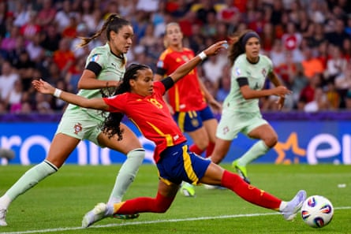

The minute’s silence was immaculate, poignant, loaded, and ultimately broke into applause. “Rest in piece Diogo Jota,” spelled a series of cards held up behind Inês Pereira’s goal; the air was thick with emotion in those moments and one of the first things to say is that Portugal’s players deserve the highest admiration for turning out to compete. They may not have shared a dressing room with Jota or his equally mourned brother, André Silva, but that cannot minimise the fact two members of their nation’s close-knit footballing family had been taken away in devastating circumstances.
It took guts and no little honour to show up and keep running, scrapping, hunting for moments to take pride in while Spain set about reaffirming their status as runaway favourites for this competition. Spain themselves deserve credit for resisting any temptation to go easy, starting at a rattling pace and completing a thoroughly professional job. In their case that often means administering a sound beating and there is no escaping that they delivered one here.
They settled for five, Esther González contributing two of them while Vicky López. Alexia Putellas and Cristina Martín-Prieto added further gloss. Four of those goals came in the first half, when they made a suitably resounding statement in front of a record crowd for a European Championship group stage game not involving the host country.
Nothing that unfolded could be detached from the night’s awful context. It was evident in the tributes many of Portugal’s players had posted on social media in the hours before kick-off; it infected the march several dozen of their supporters took to the stadium, singing Jota’s name and holding up placards in his memory. Inside the ground, one of the most eloquent tributes hung from the upper tier of the west stand. “You took the name of Portugal beyond borders,” it read. “Now it is our turn to raise your name.”
Jota embodied Portugal’s roaming, joyful, acutely accomplished football spirit. It is a matter of time before their women’s team, rapidly improving and holding genuine hope of a first knockout spot this summer, produces heroes with his level of staying power at the top. The Barcelona forward Kika Nazareth, a safe bet to be one of them, was not deemed fit enough to start here but would have been hard-pressed to shift the dial. Even before tragedy visited them, starting their tournament against Spain looked the tallest of orders.
Spain’s own Catalonia-based talisman, Aitana Bonmatí, was able to join the substitutes after making progress in her recovery from viral meningitis. They should be able to taper up without her, although this became a welcome opportunity to power down. Montse Tomé’s team had scored 11 times in two Nations League ties against these opponents in April; here they were two up within seven minutes and, in mid-20s heat at the start of an enervating schedule, they could run through the hits when it suited them after that.
Vicky López slides in at the back post to double Spain’s lead in the seventh minute.Photograph: Eurasia Sport Images/Getty Images
It took under a minute and a half for González, found by a raking pass from the left-back Olga Carmona, to show smart control with a combination of chest and shoulder before improvising a deft finish past Pereira. The second quickly followed, Mariona Caldentey snaking a tantalising low cross from the other side and seeing López convert on the stretch.
Portugal assembled themselves into a huddle after López’s goal. They hung in admirably, Pereira saving from González and twice from Clàudia Pina. Between those chances Putellas sidefooted wide, but she would finally join in four minutes before half-time after a shimmy past Diana Gomes had wrought the opening. González soon doubled her tally, Pina’s cross striking the far post and presenting the simplest finish. It was no slight on Portugal that the favourites were impossible to subdue.
The livewire Jessica Silva, who had written a heartfelt tribute to Jota on Instagram, symbolised Portugal’s appetite to keep going. After the interval she tried to catch Adriana Nanclares off her line from range and then, blazing past Laia Aleixandri, caused the defender to take a booking. Portugal were willed forward from all sides on their forays upfield, their sizeable émigré population represented in force. A goal would have raised the roof.
It almost came when Ana Capeta, who had replaced Silva, jabbed over. Spain, any point to their watching rivals for the trophy long since made, added one more through Martín-Prieto with the final action and could enjoy giving Bonmatí a runout for the final 10 minutes. Her return bodes well for more exacting assignments; in truth, though, only one name had dominated everybody’s minds all day.